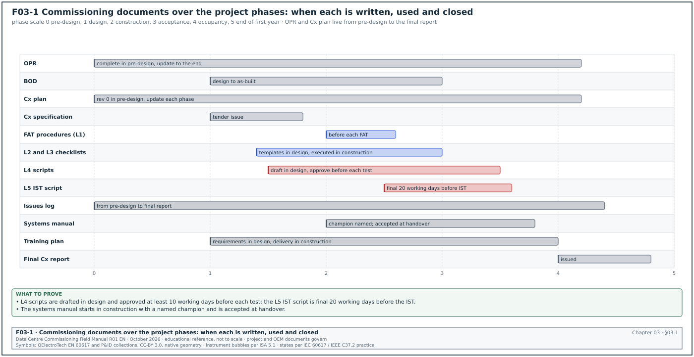
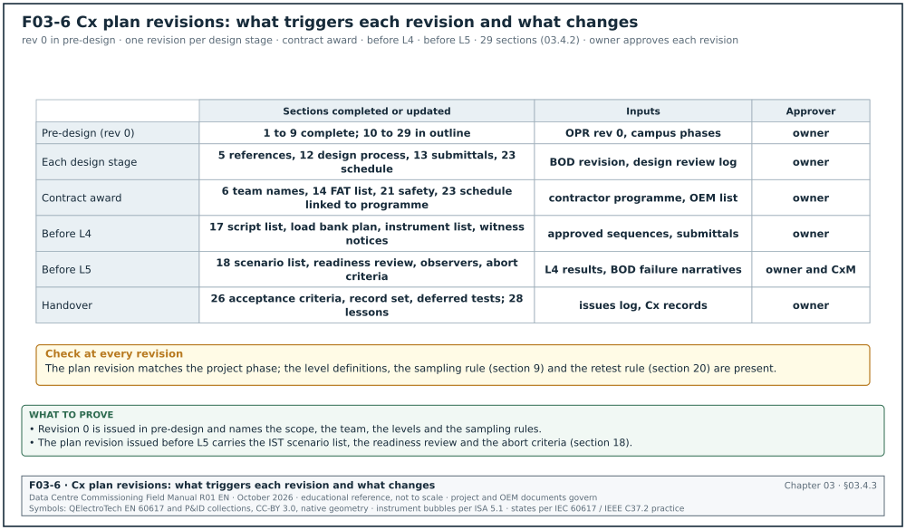
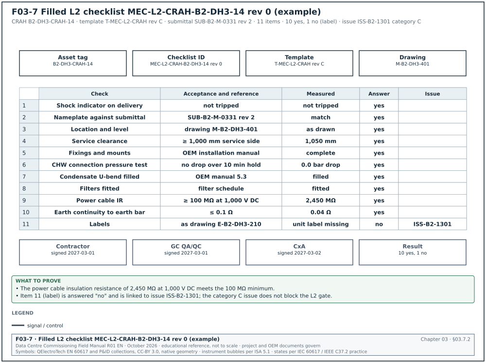
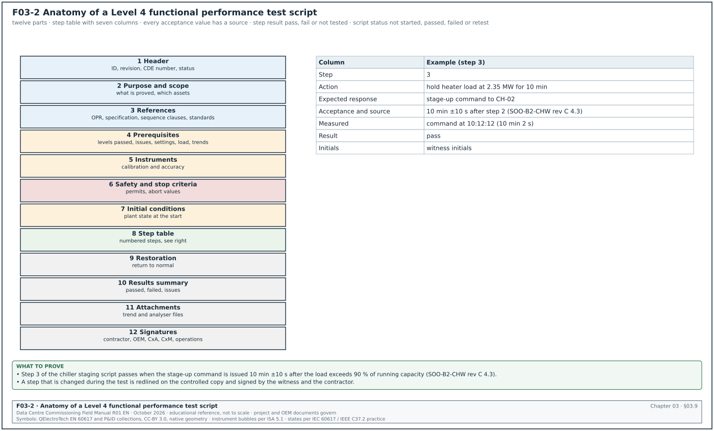
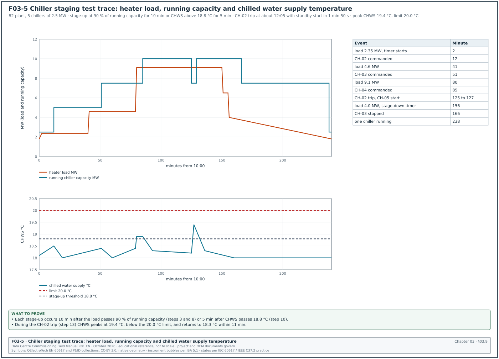
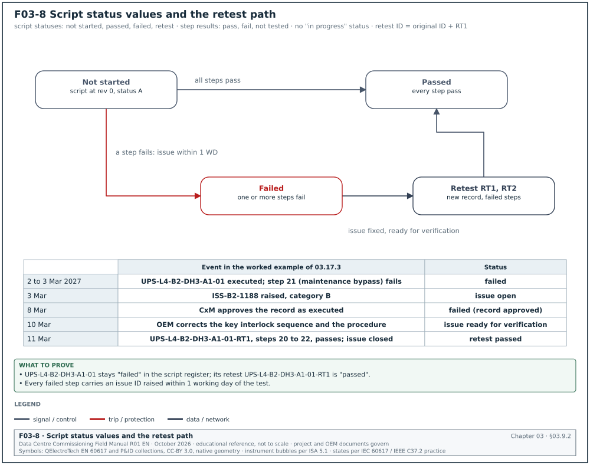
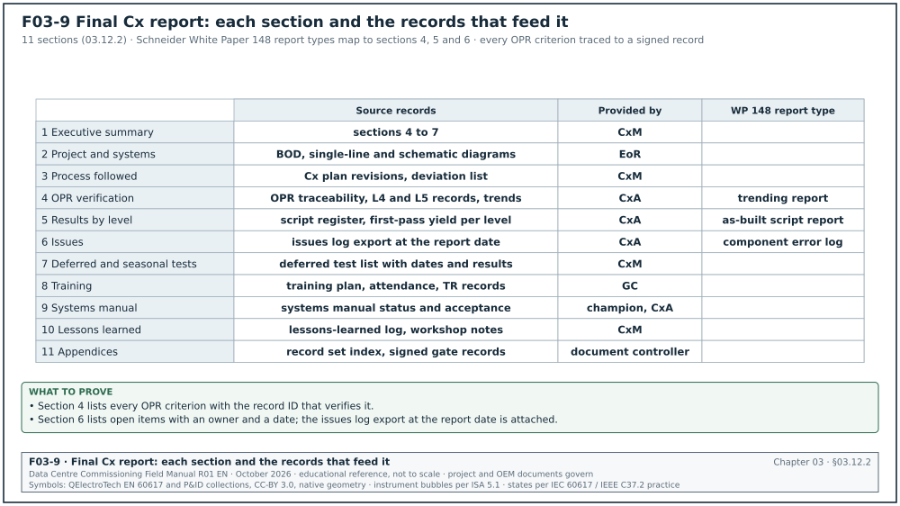
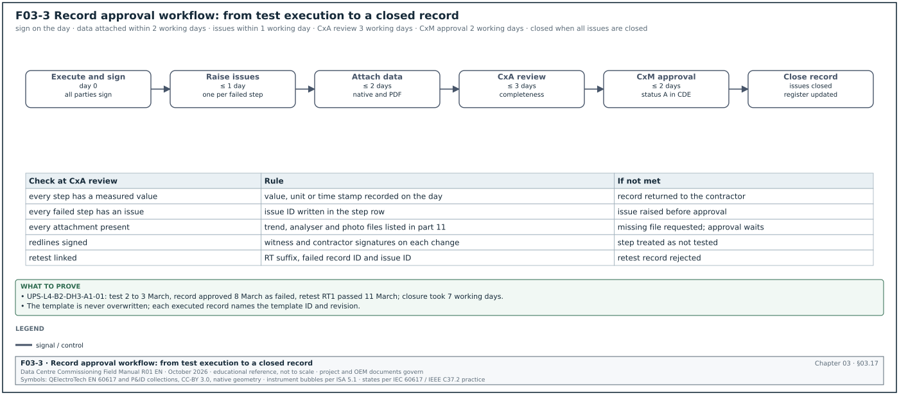
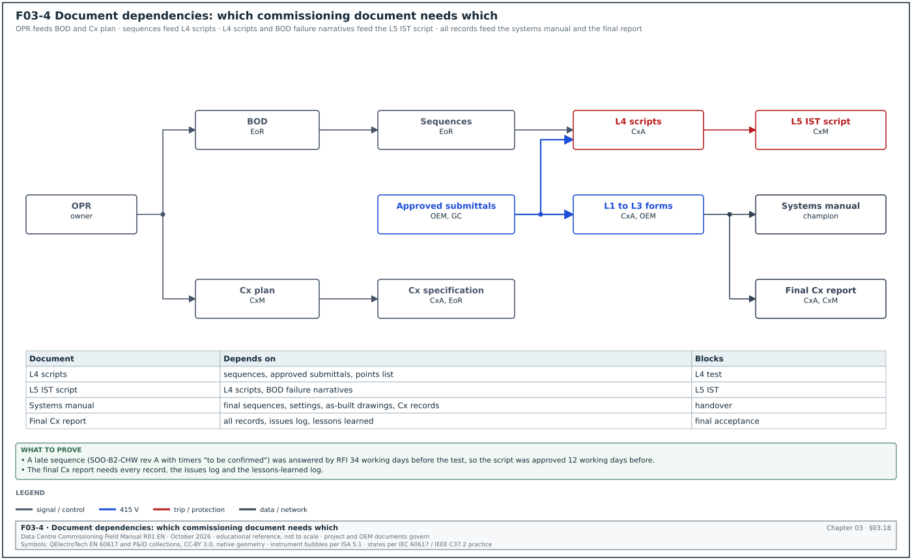

03.0Scope of this chapter
This chapter describes every document of the commissioning process on a hyperscale data-centre campus. For each document it states what it is for, who writes, reviews and approves it, when it is produced, what it contains, its usual length and which faults are common. It gives a full table of contents for the commissioning plan and the anatomy of a test script. It also gives a filled 20-step Level 4 chiller staging script and a filled Level 3 checklist for an uninterruptible power supply (UPS) module. It ends with the rules for naming, numbering, version control, signing and closing test records.
- Document set. The list of commissioning documents and how they depend on each other.
- Requirement documents. Owner's project requirements (OPR) and basis of design (BOD).
- Plan and specification. The commissioning plan (Cx plan) and the commissioning specification (CSI MasterFormat 01 91 13 and the Division 23, 26 and 28 commissioning sections).
- Test documents. Level 1 factory acceptance test (FAT) procedures and reports, Level 2 installation checklists, Level 3 pre-functional checklists, Level 4 functional performance test (FPT) scripts and Level 5 integrated systems test (IST) scripts.
- Tracking and reporting documents. Issues log, progress reports and the final commissioning report.
- Operation documents. Systems manual, training plan, seasonal test records and the lessons-learned log.
- Control rules. Naming, numbering, version control, signature, closure and dependencies.
Documents and sources used: ASHRAE Guideline 0-2019 and Standard 202-2024 (through the 2020 ASHRAE course), ASHRAE Guideline 1.4-2019, BSRIA BG 8/2009, CSI MasterFormat section 01 91 13 as used in owner master specifications. The chapter also uses Schneider Electric White Paper 148, the Archdesk test register schema, IEC 62040-3:2021, chapter 04 (document control) and chapter 02 (levels) of this manual, research note RF-03, and the MSC-1 case ledger.
03.1The commissioning document set


03.1.1Document list
The ASHRAE course on Guideline 0 lists the formal commissioning process documents (source 1). They are the OPR, BOD, Cx plan, design checklists, construction checklists and test procedures. They also include the commissioning requirements in the construction documents, the systems manual, the training plan, the issues log and the commissioning process report. Data-centre projects add the level structure of chapter 02. Figure F03-1 shows when each document is produced.
| Document | Purpose | Author | Reviewer | Approver | When produced | Typical length |
|---|---|---|---|---|---|---|
| OPR | States what the owner needs, with verifiable criteria | Owner with Cx team | commissioning authority (CxA), engineer of record (EoR), operations | Owner | Pre-design; updated in design and construction | 20 to 60 pages per campus phase |
| BOD | Records the design assumptions, methods and decisions | EoR | commissioning manager (CxM), CxA | Owner (acceptance) | Design; updated at each design stage | 40 to 150 pages |
| Cx plan | Sets how commissioning is run: scope, team, process, schedule, documents | CxM or CxA | general contractor (GC), EoR, operations | Owner | Pre-design draft; updated each phase | 60 to 150 pages plus appendices |
| Cx specification | Makes commissioning a contract duty | CxA or CxM with EoR | Owner legal and procurement | EoR (issue in tender) | Design | 20 to 40 pages for 01 91 13; 5 to 20 per discipline section |
| FAT procedure and report (L1) | Tests major equipment at the factory | original equipment manufacturer (OEM) | CxA | CxA (procedure); owner (report and shipping release) | Construction, before shipment | 20 to 80 pages per equipment type |
| L2 installation checklist | Verifies delivery and installation | CxA (template); contractor (execution) | GC quality assurance and quality control (QA/QC) | CxA | Template in design; executed in construction | 2 to 6 pages per item |
| L3 pre-functional checklist | Verifies start-up and component functions | CxA with OEM | GC, OEM | CxA | Template in design; executed in construction | 4 to 12 pages per item |
| L4 FPT script | Tests system functions and performance | CxA or CxM | EoR, OEM, GC, operations | CxM | Draft in design; final 10 working days before test | 15 to 60 pages per system |
| L5 IST script | Tests all systems together | CxM | EoR, operations, CxA | Owner and CxM | Final 20 working days before IST | 80 to 200 pages per hall |
| Issues log | Records every issue to closure | Cx team (all parties) | CxM | CxM (closure) | From pre-design to final report | Live register |
| Cx progress report | Reports status weekly or monthly | CxM | CxA | CxM | Construction and acceptance | 5 to 15 pages |
| Final Cx report | Records the whole process and its results | CxA or CxM | EoR, owner | Owner | Occupancy | 50 to 200 pages plus record set |
| Systems manual | Gives operators the system information they need | EoR, GC, OEM; assembled by a named champion | CxA | Owner | Construction; final at handover | 200 to 2,000 pages per building |
| Training plan and records | Plans and proves operator training | GC with OEM | CxA, operations | Owner | Design (requirements); construction (delivery) | 10 to 30 pages plus records |
| Seasonal and deferred test records | Tests that could not be done before handover | CxM | CxA | Owner | Occupancy | per test |
| Lessons-learned log | Records lessons for the next building | CxM | all parties | CxM | Every phase; workshop at the end | Live register |
03.1.2Who writes each document according to ASHRAE
The ASHRAE course gives the following allocation as a suggestion (source 1).
| Document | Writer suggested by ASHRAE | Accountable on a hyperscale programme |
|---|---|---|
| Cx plan | commissioning provider | CxM |
| OPR | commissioning team | CxM |
| BOD | design team | EoR |
| Design checklists | commissioning provider or team | CxM |
| Construction checklists | design team and commissioning provider or team | CxM |
| Test procedures | commissioning provider or team and design team | CxM |
| Cx requirements in the construction documents | design team and commissioning provider | CxM |
| Systems manual | design team (content and contract requirements) | CxM |
| Training plan | design team and commissioning provider | CxM |
| Issues log | commissioning team | CxM |
On hyperscale programmes the owner CxM is accountable for all commissioning documents except the BOD, as the responsibility (RACI) matrix in chapter 02 shows.
03.2Owner's project requirements (OPR)
03.2.1Purpose
The OPR states the minimum characteristics that define a successful project from the owner's view. ASHRAE states that it must address quality and quantity, must include verifiable benchmarks, is completed in pre-design and becomes the basis for all commissioning verification (source 1). Every acceptance criterion in an L4 or L5 script should trace to an OPR clause, a specification clause or both.
Owner: Owner project director; written with the CxM and the data-centre operations (DCOps) lead.
Trigger: Project approval.
03.2.2Contents of an OPR for a hyperscale campus
| No. | Section | Content | Example (MSC-1) |
|---|---|---|---|
| 1 | Project description | Campus, buildings, phases, IT capacity | 4 buildings, 12 halls, 144 MW IT |
| 2 | Business objectives | Purpose, ready-for-service dates | B1 ready for service (RFS) at 14 months, B2 at 22 months |
| 3 | Availability and topology | Tier or Class objective, redundancy, concurrent maintainability, fault tolerance | Concurrently maintainable power and cooling; UPS block design 62.5 % normal loading |
| 4 | Capacity | IT load per hall, per rack, design PUE | 12 MW per hall; 120 kW per rack nominal; power usage effectiveness (PUE) 1.22 design |
| 5 | Environmental conditions | Indoor air and liquid conditions, outdoor design | technology cooling system (TCS) 45 °C supply; chilled water 18 °C; outdoor 34.0 °C dry bulb, 27.5 °C wet bulb |
| 6 | Power quality and ride-through | UPS runtime, generator start time, transfer behaviour | 5 min UPS runtime at full block load |
| 7 | Fuel and water | Fuel autonomy, water use | 24 h fuel; water usage effectiveness (WUE) target |
| 8 | Fire and life safety | Detection, suppression, interfaces | Clean agent in electrical rooms; pre-action sprinklers in halls |
| 9 | Controls and monitoring | Building management system (BMS), electrical power monitoring system (EPMS), data-centre infrastructure management (DCIM), alarms, data retention | Alarm to operations centre within 10 s |
| 10 | Security | Physical and operational technology (OT) cybersecurity | IEC 62443 zones |
| 11 | Operation and maintenance | Staffing model, maintainability, spares, warranties | Each UPS module replaceable with the block live |
| 12 | Commissioning requirements | Levels, witness rights, load testing, IST scope | L0 to L5; 8 h load bank runs; IST per hall |
| 13 | Training and documentation | Systems manual, training hours | 40 h of training per system type |
| 14 | Sustainability | Energy, water, refrigerants | Refrigerants with low global warming potential (GWP) |
| 15 | Acceptance criteria summary | Table of measurable criteria with the verification method | see 03.2.3 |
03.2.3How to write a verifiable OPR criterion
- State the quantity. "The UPS shall support full block load for at least 5 min on battery at end of life" is verifiable. "The UPS shall be reliable" is not.
- State the condition. Give the load, the ambient condition and the configuration under which the criterion applies.
- State the verification method. Name the level and the test: "verified at L4 by full-load battery discharge test".
- Avoid design content. The OPR states what is needed. The BOD and the design state how.
- Number every criterion. Use a stable number (OPR-4.3) so scripts can cite it.
| OPR ID | Criterion | Condition | Verification |
|---|---|---|---|
| OPR-3.2 | No single component failure in the critical power path interrupts IT load | Any one UPS module, any one generator, any one block transformer out | L5 IST scenarios 3 to 9 |
| OPR-5.1 | Air inlet temperature at IT equipment within 18 °C to 27 °C | 100 % design IT load, outdoor 34.0 °C | L4 computer room air handler (CRAH) test; L5 IST hall temperature survey |
| OPR-6.1 | UPS runtime ≥ 5 min at 100 % block load | Battery at end-of-life rating | L4 battery discharge test |
| OPR-9.4 | Critical alarms reach the operations centre within 10 s | All alarm sources | L4 alarm tests; L5 IST |
03.2.4Common faults in OPRs
- No numbers. Criteria written as aims without values. Detect it by checking that every criterion has a value and a unit.
- Design written as a requirement. "Provide four chillers" in the OPR prevents the designer from meeting the need another way. Move it to the BOD.
- No update after changes. A change in rack density is made in the design but not in the OPR. Detect it at each design review by comparing the OPR revision date with the change register.
- No owner acceptance. The OPR is issued without the owner's signature. The CxA must not use an unaccepted OPR as the benchmark.
03.3Basis of design (BOD)
03.3.1Purpose and content
The BOD records the assumptions, methods, selections and decisions behind the design. ASHRAE lists the typical BOD content (source 1). The content starts with the codes, standards and guidelines used, the basis for system and assembly selection, the options considered and the calculation and analysis methods. It continues with the key inputs to calculations (data and assumptions), the narrative descriptions of system operation and of control sequences, and the equipment used as the basis of design.
| No. | BOD section | What the CxM checks |
|---|---|---|
| 1 | Codes, standards and editions | Every standard in the BOD is in the reference register (chapter 01) |
| 2 | Design criteria | Each OPR criterion has a design value |
| 3 | Load assumptions | IT load, diversity, growth, heat rejection split (in MSC-1, 80 % liquid capture for the R racks) |
| 4 | Climate data | Dry bulb, wet bulb, source and percentile |
| 5 | Electrical topology | Single-line, redundancy, block loading in normal and failure modes |
| 6 | Mechanical topology | Plant, loops, redundancy, temperatures |
| 7 | Options considered | Why the chosen option was selected |
| 8 | Calculations | Short circuit, protection coordination, arc flash, battery sizing, pipe sizing, airflow |
| 9 | Operation narratives | Normal, maintenance and failure operation of each system |
| 10 | Control sequences | Sequence of operation for each system, numbered so scripts can cite it |
| 11 | Basis-of-design equipment | Make and model used for the design and its key ratings |
| 12 | Commissioning considerations | Test points, load bank connections, metering |
03.3.2Common faults in BODs
- No failure narratives. The BOD describes normal operation only. The IST scripts cannot be written without the failure narratives. Request them at the 60 % design review.
- Sequences not numbered. Scripts cannot cite a sequence clause. Ask for numbered sequences.
- BOD not updated for substitutions. An approved equipment substitution changes the ratings. ASHRAE lists BOD updates for owner change orders and contractor substitutions in the construction phase (source 1).
03.4Commissioning plan
03.4.1Purpose
The Cx plan is the plan for the commissioning process: what is commissioned, by whom, in which order, with which documents and records. ASHRAE describes it as a plan for upcoming activities and a record of completed activities (source 1). It is started in pre-design and updated in design with construction details and the training plan. BSRIA BG 8/2009 provides a model commissioning plan template (source 3).
Owner: CxM (author when the owner runs commissioning in-house) or CxA.
Trigger: Pre-design (revision 0); updated at each design stage, at contract award, before L4 and before L5.
03.4.2Full table of contents for a hyperscale campus Cx plan
- Document control. Title, document number in the common data environment (CDE), revision history, approval signatures, distribution list.
- Introduction. Purpose of the plan, project description, campus phases, references to the OPR and BOD revisions used.
- Commissioning scope. List of commissioned systems by building and hall; systems excluded and why; owner-furnished equipment.
- Commissioning objectives. The OPR criteria to be verified and the level at which each is verified.
- Reference documents. Standards with editions (from the reference register), contract documents, OEM documents.
- Commissioning team. Names, companies, roles, contact details, authority of each role.
- Roles and responsibilities. RACI per level and per document (chapter 02).
- Commissioning levels. Definitions of L0 to L5 (and L6), entry and exit criteria, gates, tag scheme.
- Sampling and coverage rules. Which items are tested at 100 % and where sampling applies, with sample sizes.
- Communication. Meetings (Cx meeting weekly, test-readiness meetings, gate reviews), reports, escalation path, request for information (RFI) route (chapter 05).
- Document management. Naming, numbering, CDE folders, status codes, version control, redlines (chapter 04 and section 03.16).
- Design phase process. Design review stages, review periods, comment log, OPR traceability.
- Submittal review process. Which submittals the Cx team reviews and the review period.
- Factory testing (L1). Equipment list, FAT procedure approval, witness rules, shipping release.
- Installation verification (L2). Checklist templates, inspection process, pre-energisation tests.
- Start-up and pre-functional checks (L3). OEM start-up, settings management, point-to-point checks, calibration, testing, adjusting and balancing (TAB).
- Functional performance testing (L4). Script list, load bank plan, instrument list, witness notice periods.
- Integrated systems testing (L5). Scenario list, IST readiness review, load plan, observers, abort criteria.
- Issues management. Issues log fields, categories, ageing limits, closure rules.
- Retest rules. When a retest is required, who pays, how the retest record links to the failed record.
- Safety during commissioning. Permit to work, lockout and tagout (LOTO), energisation rules, load bank and heater skid safety, live-site rules (chapter 10).
- Instruments and calibration. Instrument list, calibration certificates, accuracy requirements.
- Schedule. Commissioning schedule by building and hall, linked to the construction programme; IST windows.
- Training. Training plan or reference to the separate training plan.
- Systems manual. Structure, champion, responsibilities, deadlines.
- Handover. Acceptance criteria, record set, open item lists, deferred and seasonal tests.
- Reporting. Weekly progress report, level completion reports, final Cx report.
- Lessons learned. Log, workshop, use in the next building.
- Appendices. Templates (checklists, scripts, issues log, gate record), sample filled forms, system lists, contact list, schedule.
03.4.3Comparison with BSRIA BG 8 and ASHRAE Guideline 0
The Cx plan is revised at the triggers named in 03.4.1. Figure F03-6 shows, for each trigger, which of the 29 sections of 03.4.2 are completed or updated and who approves the revision. The table compares the plan content with Guideline 0 and BG 8.


| Topic | Guideline 0-2019 Cx plan | BSRIA BG 8/2009 model plan | Data-centre addition |
|---|---|---|---|
| Scope | Yes | Yes | Level per system, 100 % coverage rules |
| Team and roles | Yes | Yes | RACI per level |
| Schedule | Yes, detailed for design in pre-design | Yes | IST windows, campus sequencing |
| Documents | Yes | Yes | Script anatomy, naming, tags |
| Testing | Checklists and test procedures | Commissioning activities and witnessing | Load bank plan, IST scenarios, abort criteria |
| Training | Training plan section | Yes | Operations readiness link |
| Safety | Not the focus | Mentioned | Energisation and live-site rules |
03.4.4Common faults in Cx plans
- Plan written once. The plan is not updated after design. Detect it by comparing the plan revision with the phase.
- Levels not defined. Detect it by searching the plan for an entry and exit criteria table.
- No sampling rule. Detect it by searching for the coverage section.
- No retest cost rule. Detect it by reading section 20 of the plan and the matching clause in 01 91 13.
03.5Commissioning specification
03.5.1Section 01 91 13 General Commissioning Requirements
Section 01 91 13 is the Division 01 section that sets the administrative and procedural commissioning rules for every trade. Owner master specifications follow the three-part format and refer to related sections such as 01 78 23 Operation and Maintenance Data and 01 79 00 Demonstration and Training (source 4). The articles below are the usual content on a data-centre project.
| Part | Article | Content |
|---|---|---|
| 1 General | 1.1 Summary | Systems to be commissioned; Cx process document named (for example Guideline 0-2019 and Standard 202-2024) |
| 1 General | 1.2 Definitions | CxA, CxM, levels, checklists, scripts, issues, retest |
| 1 General | 1.3 Commissioning team | Contractor's Cx coordinator, attendance duties |
| 1 General | 1.4 Contractor responsibilities | Labour, equipment operation, temporary power, load banks if in contract, OEM attendance |
| 1 General | 1.5 Submittals | Cx schedule, start-up procedures, completed checklists, test reports, training materials |
| 1 General | 1.6 Schedule and notice | Witness notice period (contract governs; typical 24 hours for L2 inspection requests (section 07.5.3), 48 hours for L3 tests, 10 working days for L4 and L5 tests) |
| 1 General | 1.7 Retest | Cost of retests caused by the contractor; limit on free retests |
| 2 Products | 2.1 Test instruments | Calibration within 12 months, traceable certificates, accuracy |
| 2 Products | 2.2 Load banks and heater skids | Who supplies, ratings, controls |
| 3 Execution | 3.1 Commissioning plan | Contractor's duty to follow the Cx plan |
| 3 Execution | 3.2 Checklists | Completion and submission rules |
| 3 Execution | 3.3 Start-up | OEM start-up and reporting |
| 3 Execution | 3.4 Functional tests | Participation, operation, records |
| 3 Execution | 3.5 Integrated tests | Participation, staffing, observers |
| 3 Execution | 3.6 Issues | Response times, closure evidence |
| 3 Execution | 3.7 Training | Hours per system, attendance records |
| 3 Execution | 3.8 Systems manual and records | Content, format, deadlines |
| 3 Execution | 3.9 Deferred and seasonal tests | Contractor attendance after handover |
03.5.2Discipline commissioning sections
| Section | Title | Content |
|---|---|---|
| 23 08 00 | Commissioning of HVAC | Heating, ventilation and air conditioning (HVAC) checklists and tests: chillers, pumps, dry coolers, CRAH, coolant distribution units (CDU), BMS interfaces; TAB attendance |
| 26 08 00 | Commissioning of Electrical Systems | Electrical tests to NETA Acceptance Testing Specifications (ATS); medium-voltage (MV), low-voltage (LV), generators, UPS, batteries, EPMS |
| 28 08 00 | Commissioning of Electronic Safety and Security | Fire alarm, access control, closed-circuit television (CCTV) interfaces |
| 21 08 00 | Commissioning of Fire Suppression | Sprinklers, pre-action, clean agent |
| 25 08 00 | Commissioning of Integrated Automation | BMS and EPMS integration where Division 25 is used |
03.5.3Common faults in Cx specifications
- No witness notice period. Detect it in article 1.6.
- Load banks not assigned. Detect it in article 2.2; if missing, the load bank becomes a variation.
- OEM attendance limited to start-up. Detect it by reading the OEM supply clause for L4 and L5 days.
- No retest cost rule. Detect it in article 1.7.
03.6Level 1 FAT procedure and FAT report
03.6.1FAT procedure contents
| No. | Section | Content |
|---|---|---|
| 1 | Identification | Equipment, serial numbers, order number, procedure number and revision |
| 2 | Scope | Units tested, witness points, tests not performed at the factory |
| 3 | References | Specification clauses, product standard (for example IEC 62040-3:2021 for UPS, IEC 61439 for LV assemblies) |
| 4 | Instruments | Instrument list with serial numbers and calibration due dates |
| 5 | Test set-up | Load bank, supply, connections, drawings |
| 6 | Steps | Step table with acceptance values and sources |
| 7 | Failure simulations | Each simulated failure with the expected response |
| 8 | Records | Data sheets, waveform files, photos |
| 9 | Deviations | Method to record and accept deviations |
| 10 | Signatures | OEM, CxA, owner |
03.6.2FAT report and shipping release
The FAT report contains the completed procedure with measured values, the punch list and the deviation acceptances. The shipping release is a one-page record signed by the OEM quality lead, the CxA and the owner. Equipment ships only with a signed release.
03.7Level 2 installation checklists
03.7.1Structure
ASHRAE describes the recommended sequence of construction checklist verifications (source 1). The sequence is: correct and undamaged delivery; pre-installation condition; quality of installation; operation of the element in isolation; record of negative findings to the issues log; and links to test data forms. On data-centre projects the first two are L2A and the third is L2B; operation in isolation is L3.
| Part | Content | Example for a CRAH |
|---|---|---|
| Header | Project, building, hall, asset tag, checklist ID and revision, template revision | B2-DH3-CRAH-14; MEC-L2-CRAH-B2-DH3-14 rev 0; template T-MEC-L2-CRAH rev C |
| Documents | Approved submittal number, drawing numbers, OEM manual revision | SUB-B2-M-0331 rev 2 |
| Delivery (L2A) | Shock indicator, packaging, damage, nameplate, accessories | shock indicator not tripped |
| Installation (L2B) | Location, level, fixings, clearances, pipework, condensate, filters, electrical, labels | clearance 1,000 mm service side |
| Pre-energisation tests | Insulation resistance (IR) of power cable, continuity of earth, pressure test of connections | IR ≥ 100 MΩ at 1,000 V DC |
| Findings | Each "no" answer with an issue number | ISS-B2-1301 |
| Signatures | Contractor, GC QA/QC, CxA | names and dates |
03.7.2Checklist item fields
Each checklist item is one row with the fields below. Figure F03-7 shows a filled L2 checklist for CRAH B2-DH3-CRAH-14: 11 items, 10 answered "yes" and item 11 (unit label missing) answered "no" with issue ISS-B2-1301 (category C).


| Field | Type | Example |
|---|---|---|
| Item number | integer | 7 |
| Check | text | Condensate drain water seal (U-bend) installed and filled with water |
| Reference | drawing or manual clause | M-B2-DH3-401; OEM manual 5.3 |
| Answer | choice: yes, no, not applicable | yes |
| Measured value | number and unit, where applicable | n/a |
| Issue number | text if "no" | none |
| Initials | text | AS |
03.8Level 3 pre-functional checklists
03.8.1Structure
An L3 checklist records the start-up and the component-level checks of one item. It contains the OEM start-up content, the settings record, the point checks and the measured values. It is signed by the OEM, the contractor and the CxA.
| Part | Content |
|---|---|
| Header | Asset tag, checklist ID and revision, template revision, date, energisation permit number |
| Prerequisites | L2 checklist signed, settings file approved, instruments calibrated |
| Start-up | OEM start-up steps and readings |
| Settings | Settings file name and version; setpoints checked |
| Measurements | Voltages, currents, temperatures, pressures, flows with acceptance values and sources |
| Points | BMS and EPMS point checks or reference to the point-to-point record |
| Alarms | Local alarms tested |
| Findings | Issues raised |
| Signatures | OEM, contractor, CxA |
03.8.2Filled L3 checklist for a UPS module
Worked example: L3 checklist ELE-L3-UPS-B2-DH3-A1-M2-01 rev 0 for UPS module 2 of block B2-DH3-A1. The block UPS system is 2.5 MW (MSC-1 ledger). The values below are examples; the approved OEM start-up procedure and specification 26 33 53 govern. In the Initials column, CON is the electrical contractor.
| No. | Check | Method and instrument | Acceptance and source | Result | Initials |
|---|---|---|---|---|---|
| 1 | L2 checklist signed | CDE record ELE-L2-UPS-B2-DH3-A1-01 | signed, status A | signed 2027-02-22 | CxA |
| 2 | Energisation permit | Permit register | permit valid for the date | EP-B2-0418 | GC |
| 3 | Instruments | Calibration certificates | in date, serial numbers recorded | Fluke 1587 FC s/n 4410xxxx, due 2027-09 | CxA |
| 4 | Module nameplate | Visual against submittal | model and rating as SUB-B2-E-0210 | match | OEM |
| 5 | Input cable torque marks | Visual | marks present and aligned on every lug | 12 of 12 | CON |
| 6 | Earth continuity, module frame to main earth bar | Low-resistance ohmmeter | ≤ 0.1 Ω (agreed value, section 17.5.2; specification 26 05 26 governs) | 0.012 Ω | CON |
| 7 | Input phase rotation | Phase rotation meter | L1-L2-L3 clockwise | clockwise | OEM |
| 8 | Input voltage phase to phase | True rms multimeter | 400 V ±10 % (OEM manual) | 409, 411, 408 V | OEM |
| 9 | DC bus pre-charge | OEM service display | pre-charge completes without alarm | complete in 42 s | OEM |
| 10 | Battery string open-circuit voltage | DC multimeter at battery breaker | within the OEM range for the string (range from the UPS OEM start-up procedure) | 545.2 V | OEM |
| 11 | Battery internal ohmic values | Battery analyser | each block within 25 % of the string average (practice per IEEE 1188-2025; the governing limit is in the battery OEM manual) | max deviation 7 % | CON |
| 12 | Settings file loaded | OEM software | file name and version as approved | UPS-B2-A1-SET v1.3 | OEM |
| 13 | Output voltage at no load | True rms multimeter | 400 V ±1 % (specification 26 33 53 2.4.C) | 401, 400, 401 V | OEM |
| 14 | Output frequency | Multimeter | 50.0 Hz ±0.1 % free-running (value from the UPS data sheet in SUB-B2-E-0210) | 50.00 Hz | OEM |
| 15 | Inverter to static bypass transfer, no load | OEM command | transfer without output interruption | no interruption on power analyser | OEM |
| 16 | Static bypass to inverter return | OEM command | as above | no interruption | OEM |
| 17 | Module parallel sharing at 20 % load bank | Load bank 500 kW across system | module currents within ±5 % of the average (value from the UPS data sheet in SUB-B2-E-0210) | 2.1 % | OEM |
| 18 | Fan operation | Visual and OEM display | all fans running, no fan alarm | ok | OEM |
| 19 | Local alarms: input fail | Open module input breaker | alarm on display and to EPMS within 5 s | display yes; EPMS 2.4 s | EPMS |
| 20 | Local alarms: battery breaker open | Open battery breaker | alarm on display and to EPMS | yes, 2.1 s | EPMS |
| 21 | EPMS points | Point-to-point record EPMS-L3-B2-DH3-UPS-A1 | 100 % of points pass | 48 of 48 | EPMS |
| 22 | BMS summary alarm | Point-to-point record | common alarm reaches BMS | yes | BMS |
| 23 | Thermal scan at 20 % load | Thermal imager | no connection more than 10 K above similar connections (practice; confirm against ANSI/NETA ATS-2025 Table 100.18) | max 3 K | CON |
| 24 | Event log time | Compare with campus time server | within 1 s | 0.3 s | EPMS |
| 25 | Labels | Visual | module and breaker labels as drawing E-B2-DH3-210 | ok | CON |
| 26 | Doors and covers | Visual | all covers fitted, door interlocks work | ok | CON |
| 27 | Findings | Issues log | issues raised for every "no" | none | CxA |
| 28 | OEM start-up report | Attached | signed by OEM | SU-4471 attached | OEM |
All 28 items passed. The checklist is signed by the OEM start-up engineer, the electrical contractor and the CxA on 2027-02-24. The CxA requests the L3 gate (chapter 02) and hangs the green tag after the gate record GATE-L3-B2-DH3-UPS-A1-M2 is signed.
Common errors:
- Settings file version not recorded. A later setting change cannot be traced. Detect it by checking item 12 on every L3 checklist.
- Alarm checked on the display only. The EPMS and BMS paths are not proved. Detect it by checking the arrival time column.
- Ohmic values without a baseline. The values are recorded without the string average. Detect it by checking that the acceptance rule is stated.
03.9Level 4 functional performance test scripts




03.9.1Script anatomy
Figure F03-2 shows the parts of a script. ASHRAE states that test procedures must be scripted and should allow easy recording and archiving of the results for the systems manual (source 1). Schneider White Paper 148 describes an "as built" script report that gives a line-by-line account of how each component passed or failed (source 6).
| No. | Part | Content | Example |
|---|---|---|---|
| 1 | Header | Project, building, system, assets, script ID, revision, CDE number, status | MEC-L4-CHW-B2-STG-01 rev C; MSC1-CXA-B2-01-RP-CX-4031 |
| 2 | Purpose and scope | What the script proves, which assets, what is excluded | Staging of chillers CH-01 to CH-05 |
| 3 | References | OPR clauses, specification clauses, sequence of operation clauses, standards with editions | OPR-5.4; SOO-B2-CHW rev C clauses 4.1 to 4.9 |
| 4 | Prerequisites | Levels passed, issues closed, settings versions, load available, permits, trends running | L3 signed for CH-01 to CH-05; BMS trend group TG-CHW-01 at 10 s |
| 5 | Instruments | Instrument list with calibration and accuracy | ultrasonic flow meter ±1 %; reference thermometer ±0.1 K |
| 6 | Safety and stop criteria | Hazards, permits, conditions that stop the test | stop if chilled water supply (CHWS) temperature exceeds 21.0 °C for 2 min |
| 7 | Initial conditions | Plant state at the start | CH-01 running, others in auto, load 1.8 MW |
| 8 | Step table | Numbered steps with action, expected response, acceptance and source, measured value, result, initials | see 03.9.3 |
| 9 | Restoration | Return to normal state | return all to auto |
| 10 | Results summary | Steps passed, failed, not tested; issues raised | 20 of 20 passed |
| 11 | Attachments | Trend files, photos, analyser files | TG-CHW-01 export CSV |
| 12 | Signatures | Contractor, OEM, controls integrator, CxA, CxM, operations | names, dates |
03.9.2Step table columns
The step table has seven columns. Figure F03-8 shows the four script statuses, the step results and the retest path, with the dates of the UPS worked example in 03.17.3.


| Column | Content | Rule |
|---|---|---|
| Step | Number | Steps are numbered 1 to n; no sub-steps deeper than one level (5a, 5b) |
| Action | What the operator does | One action per step; names the device and the command |
| Expected response | What the system must do | Written from the sequence of operation |
| Acceptance and source | Value, tolerance, time limit, and the clause it comes from | Every value has a source |
| Measured | Value and unit, or time stamp | Recorded at the time of the step |
| Result | Pass, fail or not tested | No other values |
| Initials | Witness initials | Witness of the step, not the writer |
The Archdesk test register schema allows four test statuses only and states that "in progress" is not a valid status for a test (source 7). This manual uses four statuses for a script: not started, passed, failed, retest. For a step, the result is pass, fail or not tested.
03.9.3Filled 20-step L4 chiller staging script
Worked example: Script MEC-L4-CHW-B2-STG-01 rev C, chiller staging sequence for the building B2 chilled-water plant. The plant serves the three air halls of B2 on the cold loop at 18 °C supply and 24 °C return. The plant has five chillers CH-01 to CH-05 of 2.5 MW each, four duty and one standby. This is an example value sized from the MSC-1 cold-loop duty of 36.5 MW for the campus, about 9.1 MW per building. The warm-loop trim chillers of chapter 18 are a separate plant of 8 duty and 1 standby units of 2,500 kW. The chilled water supply setpoint is 18.0 °C and the return is 24.0 °C (MSC-1 ledger). Heater skids on the chilled-water loop provide the load. The staging values come from the approved sequence of operation (SOO) SOO-B2-CHW rev C, an example document. The project sequence governs. The plant controls stage up when plant load exceeds 90 % of running capacity for 10 min or when supply temperature exceeds 18.8 °C for 5 min. Stage down when load is below 60 % of the capacity that would remain after stopping one chiller for 15 min. The minimum run time is 30 min and the minimum off time is 15 min. The standby chiller starts within 3 min of a running chiller fault.
The CxA confirms the prerequisites before step 1. L3 is signed for CH-01 to CH-05 and the pumps, and BMS trend group TG-CHW-01 logs at 10 s. Heater skids HS-01 to HS-04 (4 × 2.5 MW) are connected under permit PTW-B2-0662. The plant has no open category A issue. The Initials column holds the role of the step witness.
| Step | Action | Expected response | Acceptance and source | Measured | Result | Initials |
|---|---|---|---|---|---|---|
| 1 | Confirm initial state: CH-01 running, CH-02 to CH-05 in auto, load 1.8 MW | Plant stable | CHWS 18.0 ±0.3 °C for 10 min (SOO 4.1) | 18.1 °C | Pass | CxA |
| 2 | Raise heater load to 2.35 MW (94 % of 2.5 MW) | Stage-up timer starts | Timer starts when load > 90 % (SOO 4.3) | timer started at 10:02:10 | Pass | CxA |
| 3 | Hold load 10 min | Stage-up command to CH-02 | Command at 10 min ±10 s after step 2 (SOO 4.3) | 10:12:12 | Pass | CxA |
| 4 | Observe CH-02 start | Isolation valve opens, pump proven, compressor starts | Valve open ≤ 90 s; chiller running ≤ 5 min from command (OEM start-up data) | valve 62 s; running 3 min 40 s | Pass | CxA |
| 5 | Observe CHWS after CH-02 start | Supply returns to setpoint | 18.0 ±0.3 °C within 10 min; no excursion above 18.8 °C (SOO 4.1) | max 18.5 °C; stable at 18.0 °C after 7 min | Pass | CxA |
| 6 | Check load sharing | Both chillers load equally | Current within ±10 % of each other (SOO 4.6) | 51 % and 49 % | Pass | CxA |
| 7 | Raise load to 4.6 MW (92 % of 5.0 MW) | Stage-up timer starts | Timer starts (SOO 4.3) | 10:41:30 | Pass | CxA |
| 8 | Hold 10 min | CH-03 commanded | 10 min ±10 s (SOO 4.3) | 10:51:34 | Pass | CxA |
| 9 | Observe CH-03 start and recovery | CH-03 running; CHWS at setpoint | as steps 4 and 5 | running 3 min 55 s; max 18.4 °C | Pass | CxA |
| 10 | Raise load to 9.1 MW quickly (fourth chiller needed) | Supply temperature rises; temperature-based stage-up | CH-04 commanded when CHWS > 18.8 °C for 5 min (SOO 4.4) | CHWS 18.9 °C at 11:20:05; command 11:25:06 | Pass | CxA |
| 11 | Observe CH-04 start and recovery | Four chillers running; CHWS recovers | ≤ 18.8 °C within 10 min of CH-04 running (SOO 4.4) | 18.3 °C at 11:33 | Pass | CxA |
| 12 | Check that CH-05 does not start | Standby stays off | No command while four duty chillers run normally (SOO 4.2) | no command | Pass | CxA |
| 13 | Trip CH-02 by opening its control circuit (simulated fault by OEM) | Fault alarm; standby CH-05 starts | Alarm at BMS ≤ 10 s; CH-05 command ≤ 3 min (SOO 4.7) | alarm 4 s; command 1 min 50 s | Pass | CxA |
| 14 | Observe CHWS during fault | Excursion limited | CHWS ≤ 20.0 °C during the event; recovery to 18.3 °C within 15 min (SOO 4.7, OPR-5.4) | max 19.4 °C; 18.3 °C after 11 min | Pass | CxA |
| 15 | Reset CH-02 fault | CH-02 returns to available; no automatic restart of a fifth chiller | CH-02 available; plant stays at 4 running (SOO 4.7) | as expected | Pass | CxA |
| 16 | Reduce load to 6.5 MW | Stage-down timer does not start | Load < 60 % of remaining 7.5 MW is 4.5 MW; 6.5 MW does not start the timer (SOO 4.5) | timer not started | Pass | CxA |
| 17 | Reduce load to 4.0 MW | Stage-down timer starts | Timer starts when load < 4.5 MW (SOO 4.5) | 12:31:20 | Pass | CxA |
| 18 | Hold 15 min | Lag chiller with longest run time stops | Stop command at 15 min ±10 s; chiller with the minimum run time satisfied (SOO 4.5, 4.8) | 12:46:22; CH-03 stopped | Pass | CxA |
| 19 | Try to restart CH-03 by raising load within 15 min of stop | Anti-cycle timer blocks restart; next available chiller starts | No CH-03 start before 15 min off time (SOO 4.8) | CH-02 started; CH-03 blocked | Pass | CxA |
| 20 | Restore: load to 1.8 MW, plant in auto | Plant stages down to one chiller | One chiller running within 60 min; CHWS 18.0 ±0.3 °C (SOO 4.1) | one chiller at 13:58; 18.0 °C | Pass | CxA |
Figure F03-5 plots the heater load, the running chiller capacity and the chilled water supply temperature recorded during the test. The 20 steps passed at first attempt (first-pass yield 100 % for the script). Trend file TG-CHW-01_2027-04-14.csv and the heater skid log are attached. The script is signed by the controls integrator, the chiller OEM, the mechanical contractor, the CxA, the CxM and the DCOps lead on 14 April 2027.
Common errors:
- Load changed too slowly or too fast. Step 10 needs a fast load rise to test the temperature-based stage-up; a slow rise tests only the load-based rule. Write the load ramp rate into the step.
- Timers set short for the test. The integrator shortens the 10 min timer to save time. The test then does not prove the approved sequence. Check the timer values in the controller before step 1 and record them.
- Simulated fault at the BMS. A fault forced in the BMS software does not test the chiller's own fault output. Use a fault at the chiller (step 13) as stated.
03.9.4Script review procedure
Purpose: Approve a script that can be executed and that proves the OPR and the sequence.
Owner: CxM.
Trigger: Draft script issued by the CxA.
Steps:
- Check the references. Every acceptance value has a source with edition and clause. Allow 2 working days.
- Check against the approved sequence. Every sequence clause in scope is tested by at least one step.
- Check executability. The DCOps lead and the contractor confirm that each action can be performed safely with the equipment installed.
- Check the instruments. Each measured value has an instrument of adequate accuracy.
- Return comments. Return within 5 working days.
- Approve. Approve the script at least 10 working days before the test. The approved script is published in the CDE with status A.
Records: Script review comment sheet; approved script revision.
03.10Level 5 IST scripts
03.10.1Structure
The IST script contains, for each scenario, the expected response of every system, the observers, the time stamps to collect, the abort criteria and the restoration steps. Chapter 28 gives the scenarios.
| Part | Content |
|---|---|
| Hall and load plan | Heater and load bank positions; in MSC-1, 9.6 MW liquid and 2.4 MW air load per hall |
| Readiness checklist | L4 passed list; issues status; event logging enabled; time synchronisation checked |
| Observer plan | Positions and roles for each scenario |
| Scenario sheets | Initiating action, expected response by system and time, acceptance, abort criteria |
| Data collection | EPMS event exports, BMS trends, power analyser files, temperature loggers |
| Restoration | Return to normal and recovery criteria |
| Results summary | Scenario results and issues |
| Signatures | Owner, CxM, CxA, GC, OEMs, operations |
03.10.2Scenario sheet columns
| Column | Content |
|---|---|
| Time | Planned time offset from the initiating action |
| System | UPS, generator, switchgear, BMS, EPMS, cooling, fire |
| Expected response | Written from the sequence and the BOD failure narrative |
| Acceptance | Value and time limit with source |
| Observed | Value and time stamp |
| Result | Pass, fail, not observed |
03.11Issues log
03.11.1Purpose and fields
The ASHRAE course describes the issues log as the shared record of the commissioning team (source 1). The log should be easy to use and should show every issue resolved by occupancy. Standard 202 calls it the issues and resolution log.
| Field | Type | Example |
|---|---|---|
| Issue ID | text | ISS-B2-1240 |
| Date raised | date | 2027-03-18 |
| Raised by | name and role | CxA |
| Building, hall, system | codes | B2, DH3, CDU |
| Asset tag | text | B2-DH3-CDU-07 |
| Level | choice L0 to L6 | L4 |
| Source record | record ID and step | BMS-L4-B2-DH3-CDU-SEQ-01 step 18 |
| Description | text | Pump changeover took 14 s; acceptance ≤ 10 s |
| Category | A, B, C (rule in section 09.9.1) | B |
| Responsible party | company | controls integrator |
| Due date | date (from category ageing limit) | 2027-03-29 |
| Corrective action | text | proportional-integral-derivative (PID) output ramp changed; changeover delay reduced |
| Evidence of closure | record ID | retest BMS-L4-B2-DH3-CDU-SEQ-01-RT1 |
| Status | open, ready for verification, closed | closed |
| Closed by and date | name and date | CxA, 2027-03-23 |
03.11.2Rules
- One issue per fault. Do not combine faults in one entry.
- Closure needs evidence. An issue is closed only with a record ID that shows the fault no longer exists.
- Retest links. A retest record references the issue ID and the failed record.
- Weekly export. The log is exported weekly at status S2 for the Cx meeting (chapter 04).
03.12Progress reports and the final commissioning report
03.12.1Weekly progress report contents
- Summary. Progress against the Cx schedule by building and hall.
- Level completion. Count of items or systems passed per level against plan.
- Issues. Open issues by category and age; issues closed this week.
- Tests next week. Planned tests with witness notices.
- Risks. Items that block the next gate.
- Key performance indicators (KPI). First-pass yield, issue ageing, gate turnaround, tag accuracy (chapter 02).
03.12.2Final commissioning report contents
The final report has 11 sections. Figure F03-9 shows the records that feed each section and the party that provides them.


| No. | Section | Content |
|---|---|---|
| 1 | Executive summary | Scope, result, open items, deferred tests |
| 2 | Project and systems | Description of the commissioned systems |
| 3 | Process followed | Cx plan revisions, levels, deviations from the plan |
| 4 | OPR verification | Each OPR criterion with the record that verifies it |
| 5 | Results by level | L1 to L5 summaries with first-pass yield |
| 6 | Issues | Issues log summary; open items with owners and dates |
| 7 | Deferred and seasonal tests | List, dates, results when done |
| 8 | Training | Training delivered and verified |
| 9 | Systems manual | Status and acceptance |
| 10 | Lessons learned | Workshop output |
| 11 | Appendices | Record set index, signed gate records |
Schneider White Paper 148 lists three report types from integrated commissioning: the "as built" script report, the component error log and a trending report with a management summary of system performance trends (source 6). They map to sections 5, 6 and 4 of the final report.
03.13Systems manual
03.13.1Purpose and content
ASHRAE Guideline 1.4-2019 gives the guidance and procedures for producing a systems manual as a resource for training, operation, maintenance and upgrading. Addendum a (2024) adds detail to section 4.1 on the required information (source 2). The ASHRAE course states that the systems manual needs a champion and input from the design team, the contractor and the commissioning provider (source 1).
| No. | Section | Content | Provided by |
|---|---|---|---|
| 1 | Executive summary | Building, systems, contacts | CxM |
| 2 | OPR and BOD (final) | Current revisions | Owner, EoR |
| 3 | System descriptions | Each system's function, configuration and operation | EoR |
| 4 | Single-line and schematic diagrams | As-built | EoR, GC |
| 5 | Sequences of operation | Final, as tested | EoR, controls integrator |
| 6 | Operating procedures | Normal, maintenance and emergency procedures | GC, OEM, operations |
| 7 | Set points and settings | Protection settings, control set points, with versions | GC, OEM |
| 8 | Maintenance information | Schedules, spares, warranties | GC, OEM |
| 9 | Commissioning record summary | Index of L1 to L5 records | CxM |
| 10 | Training records | Attendance and verification | GC |
| 11 | Recommissioning guidance | Tests to repeat after changes | CxM |
03.14Training plan
The ASHRAE course states that the training plan lays out the training needs (source 1). It lists the intended audience, expected outcomes, venue or approach, time allocations and verification requirements, in enough detail for bidding and scheduling.
| Field | Example |
|---|---|
| System | UPS, block B2 |
| Audience | DCOps electrical shift technicians (12 persons) |
| Outcome | Operate static and maintenance bypass; respond to alarms |
| Trainer | UPS OEM |
| Duration | 16 h of the 40 h for the UPS system type in OPR section 13 (8 h classroom, 8 h on equipment) |
| Verification | Each trainee performs a supervised bypass transfer; recorded on TR-B2-UPS-01 |
03.15Seasonal tests and lessons learned
- Seasonal tests. Tests that need a particular weather condition. In Jakarta the condition is high wet bulb and dry bulb (34.0 °C and 27.5 °C design in the MSC-1 worked example). The test checks plant capacity and dry cooler performance near design ambient.
- Deferred tests. Tests that need conditions not available before handover, such as full tenant IT load.
- Lessons-learned log fields. ID, building, phase, level, what happened, effect, cause, action for the next building, owner of the action, status.
03.16Naming and numbering of commissioning documents
03.16.1Two identifiers per document
Each commissioning record has two identifiers. The CDE container number follows the ISO 19650 naming rules of chapter 04 (for example MSC1-CXA-B2-01-RP-CX-4031). The test record ID is the identifier written on the record and used in the issues log and gate records.
03.16.2Test record ID format
| Field | Values | Example |
|---|---|---|
| Discipline | ELE electrical, MEC mechanical, BMS, EPMS, FIRE, NET network, INT integration, IST | MEC |
| Level | L1 to L5 (L1-FAT for factory) | L4 |
| System | CHW, UPS, CRAH, CDU, MVSG, LVSB, GEN | CHW |
| Location | building and hall | B2 or B2-DH3 |
| Asset or function | asset number or function code | STG (staging) |
| Sequence number | two digits | 01 |
| Retest suffix | RT1, RT2 | none |
| Revision | rev A, B, C (draft) or 0, 1, 2 (issued) | rev C |
Examples: MEC-L4-CHW-B2-STG-01 rev C; ELE-L3-UPS-B2-DH3-A1-M2-01 rev 0; BMS-L4-B2-DH3-CDU-SEQ-01-RT1.
03.16.3Rules
- Templates and executed records are different documents. A template has its own ID (T-MEC-L2-CRAH rev C). Each executed record names the template ID and revision. The template is never overwritten with test data (chapter 04).
- One executed record per asset per level. Repetitive items each get their own record.
- IDs never reused. A cancelled ID stays cancelled.
- Retest is a new record. A retest has the original ID with RT1, RT2 and references the failed record and the issue.
03.17Version control, signing and closing a test record


03.17.1Version rules
| Stage | Revision | CDE status | Allowed use |
|---|---|---|---|
| Draft for review | rev A, B, C | S2 or S3 (work in progress shared for review) | review only |
| Approved for execution | rev 0 | A (published) | execution |
| Revised after approval | rev 1, 2 | A after re-approval | execution; previous revision superseded |
| Executed record | the executed copy of rev n | A after signatures | evidence |
03.17.2Record approval workflow
Figure F03-3 shows the workflow from execution to closure.
Purpose: Turn an executed script into a closed record that the owner can rely on.
Owner: CxA for the record; CxM for approval.
Trigger: End of test execution.
Steps:
- Sign on the day. All parties sign the executed copy on the test day. Signatures carry name, company and date.
- Record redlines. Any change to a step during the test is written on the controlled copy and signed by the witness and the contractor (chapter 04).
- Attach data within 2 working days. Trend files, analyser files and photos are attached in native form and as PDF.
- Raise issues within 1 working day. Every failed step has an issue ID in the record.
- CxA review within 3 working days. The CxA checks completeness: every step has a measured value and a result, every failure has an issue, every attachment is present.
- CxM approval within 2 working days. The CxM approves the record and publishes it at status A.
- Close the record. The record is closed when all its issues are closed or carried forward with owner acceptance. Closure is recorded in the script register.
Records: Signed executed record; attachments; issues; script register entry.
03.17.3Script register fields
| Field | Type | Example |
|---|---|---|
| Record ID | text | MEC-L4-CHW-B2-STG-01 |
| Revision executed | text | rev 0 |
| CDE number | text | MSC1-CXA-B2-01-RP-CX-4031 |
| Asset or system | text | B2 chilled-water plant |
| Planned date | date | 2027-04-14 |
| Status | not started, passed, failed, retest | passed |
| Witnesses | names | as signed |
| Issues raised | IDs | none |
| Closed date | date | 2027-04-21 |
Worked example: Closing the UPS L4 record UPS-L4-B2-DH3-A1-01. The test runs on 2 to 3 March 2027. Step 14 (battery discharge at full load) passes at 5 min 48 s against ≥ 5 min. Step 21 (maintenance bypass) fails: the key interlock sequence differs from the operating procedure. The CxA raises ISS-B2-1188 (category B) on 3 March. Data files are attached on 4 March (1 working day). The CxA review finds one missing power analyser file for step 9 and gets it on 5 March. The CxM approves the record on 8 March with status "failed". The OEM corrects the interlock key sequence and the procedure on 10 March. The retest UPS-L4-B2-DH3-A1-01-RT1 covers steps 20 to 22 on 11 March and passes. ISS-B2-1188 is closed on 11 March, and the script register shows the original record as "failed" and the retest as "passed". Elapsed time from test to closure: 7 working days.
03.18Document dependencies
Figure F03-4 shows which document needs which. A document cannot be approved before the documents it depends on.


| Document | Depends on | Blocks |
|---|---|---|
| Cx plan | OPR | Cx specification, scripts |
| BOD | OPR | Design, sequences |
| Cx specification | OPR, Cx plan | Tender |
| Sequences of operation | BOD | L4 and L5 scripts |
| L2 and L3 templates | Approved submittals, OEM manuals | L2 and L3 execution |
| FAT procedure | Specification, approved submittal | L1 |
| L4 scripts | Sequences, approved submittals, points list | L4 |
| L5 IST script | L4 scripts, BOD failure narratives | L5 |
| Systems manual | Final sequences, settings, as-built drawings, Cx records | Handover |
| Final Cx report | All records, issues log, lessons learned | Final acceptance |
Worked example: Late sequence of operation. The EoR issues the chilled-water sequence SOO-B2-CHW rev A at 90 % design with the staging timers marked "to be confirmed". The CxA cannot finalise MEC-L4-CHW-B2-STG-01. The CxM raises RFI-B2-MEC-0280 with a required answer date 30 working days before the planned L4 test. This date leaves time to review the script (5 days), revise it (5 days) and approve it 10 working days before the test. The EoR issues rev C with the timers 34 working days before the test. The CxA issues the finalised draft 22 working days before the test, and review (5 days) and revision (5 days) follow. The script is approved 12 working days before the test.
03.19Common errors in commissioning documents
- Acceptance values without source. Detect at script review.
- Scripts written from the specification only. The approved submittal and the sequence are not used. Detect by checking the references section.
- Template overwritten. Detect by comparing template and executed record IDs in the CDE.
- Records signed later in the office. Detect by comparing signature dates with the test date.
- Issues not linked. A failed step without an issue ID. Detect at CxA review.
- Systems manual left to the end. Detect by checking the systems manual status in the weekly report from the start of construction.
- OPR not updated. Detect by comparing OPR revision dates with changes.
- Retest overwriting the original record. Detect by checking the RT suffix.
- Status "in progress". Detect in the script register; only the four statuses are allowed.
- Missing native data. Only PDF exports are attached. Detect at CxA review.
03.20Checklist for site use
- OPR accepted. The current OPR revision is signed by the owner and every criterion has a value and a verification method.
- BOD current. The BOD includes failure narratives and numbered sequences and is updated for substitutions.
- Cx plan complete. The plan has all 29 sections of 03.4.2 and the current revision matches the phase.
- Specification complete. Section 01 91 13 has the witness notice, retest, load bank and OEM attendance articles.
- FAT procedures approved. Each procedure was approved before the test and the witness points are marked.
- Templates published. L2 and L3 templates are at status A with revision.
- Scripts approved in time. Every L4 script was approved at least 10 working days before its test.
- Script anatomy followed. Every script has the 12 parts of 03.9.1.
- Sources in every step. Every acceptance value has a source.
- Records signed on the day. Signatures carry name, company and date.
- Issues linked. Every failed step has an issue ID; every closed issue has a closure record.
- Naming followed. Record IDs follow 03.16.2 and are never reused.
- Versions controlled. Only approved revisions are executed; redlines are signed.
- Systems manual in progress. A champion is named and the manual status is reported weekly.
- Training planned. Each system has audience, outcome, duration and verification.
- Final report outline agreed. The final report structure of 03.12.2 is agreed with the owner before L5.
03.21Sources
- ASHRAE, "Principles of Building Commissioning: ASHRAE Guideline 0 and Standard 202", course slides, 2020, accessed 31 October 2026. https://www.utah.gov/pmn/files/1040363.pdf
- ASHRAE Guideline 1.4-2019, Preparing Systems Manuals for Facilities, addendum a (15 March 2024), accessed 31 October 2026. https://www.ashrae.org/file%20library/technical%20resources/standards%20and%20guidelines/standards%20errata/guidelines/g1_4_2019_a_20240315.pdf
- BSRIA BG 8/2009, Model Commissioning Plan, catalogue record, accessed 31 October 2026. https://cis.ihs.com//CIS/document/294607
- University of Houston master specification, Section 01 91 13 General Commissioning Requirements, accessed 31 October 2026. https://www.uh.edu/facilities-services/departments/fpc/master-specs/01-91-13-fl-general-commissioning-reqmts.pdf
- Oneida County, Section 01 91 13 General Commissioning Requirements (RFP 2026-454), accessed 31 October 2026. https://oneidacountyny.gov/assets/Purchasing/Docs/RFPs/RFP-2026-454-Building-Commissioning-Services/13-Section-019113-General-Commissioning-Requirements.pdf
- Schneider Electric, White Paper 148, Data Center Projects: Commissioning, Rev 1, accessed 31 October 2026. https://download.schneider-electric.com/doc/SPD_DBOY-6NJNK6_EN/DBOY-6NJNK6_R1_EN.pdf
- Archdesk, "Master Data Center Commissioning: L1-L5" (test register schema), accessed 14 October 2026. https://archdesk.com/blog/data-center-commissioning-levels
- IFMA Facility Management Journal, "Beyond Traditional" (NEBB article on Levels 0 to 6), August 2026, accessed 31 October 2026. https://fmj.ifma.org/beyond-traditional-nebb
- Uptime Institute Journal, "Improve Project Success Through Mission Critical Commissioning", accessed 14 October 2026. https://journal.uptimeinstitute.com/improve-project-success-through-mission-critical-commissioning
- ANSI/ASHRAE/IES Standard 202-2024, catalogue entry, accessed 31 October 2026. https://webstore.ansi.org/standards/ashrae/ansiashraeies2022024
- IEC 62040-3:2021, Uninterruptible power systems, Part 3: Method of specifying the performance and test requirements, IEC. https://webstore.iec.ch/en/publication/62020
- IEEE 1188, Recommended Practice for Maintenance, Testing, and Replacement of Valve-Regulated Lead-Acid Batteries, IEEE. https://standards.ieee.org/ieee/1188/
- ANSI/NETA ATS-2025 summary, ANSI Blog, accessed 31 October 2026. https://blog.ansi.org/ansi/ansi-neta-ats-2025-electrical-power-testing/
- ISO 19650-2:2018, Organization and digitization of information about buildings, Part 2: Delivery phase, ISO. https://www.iso.org/standard/68080.html
- Data Centre Commissioning Field Manual R01, chapter 04 (document control, sections 04.12.2 and 04.12.3), October 2026.
- MSC-1 example campus: the worked-example data set described on the manual index (illustrative values, not project data).
Educational field reference compiled from public standards, guides, manufacturer documents and published incident reports; sources close each chapter. The project specification, the Engineer of Record and the OEM documents govern; check the current edition of every standard before use. Worked examples use an example campus (MSC-1: 4 buildings, 12 halls of 12 MW), not project data. Independent research; not affiliated with any current or former employer. Privacy · Terms.